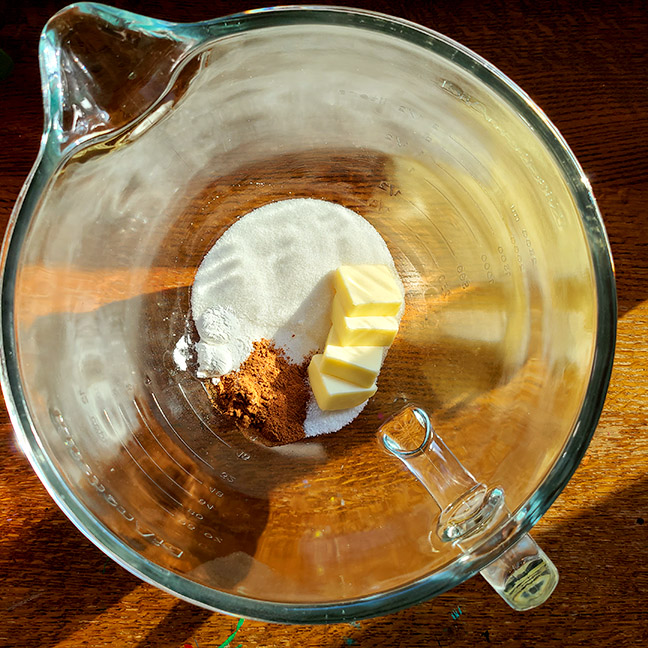

Part One
- Preheat the oven to 350°F.
- Line a baking sheet with parchment paper.
- In a medium-sized bowl, beat 4 tablespoons softened butter, 2/3 cup sugar, 1 1/4 teaspoons pumpkin pie spice,
3/4 teaspoon cinnamon, 1 1/2 teaspoons baking powder, and 1 teaspoon salt until the mixture is smooth and creamy.

Back | Continue